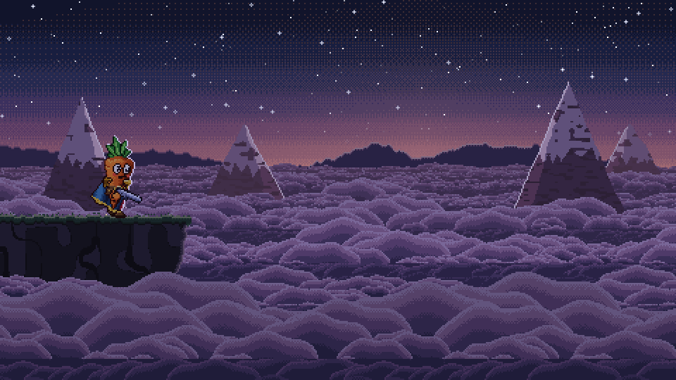

Title Sequence
The opening of the game, timed to its music. A star screen doubles as the lobby, a shooting star starts the song, the carrots walk to a cliff above a sea of clouds, the logo booms in, and everyone leaps.
The title is a short cinematic locked to the title music. It's also the lobby: players join on the star screen, and the host starts the show for everyone.
The sequence

- Star screen (the lobby): the screen fades in from black over 1.2 s to a sky full of stars, with the player roster underneath and the song's pad looping softly. Random stars twinkle, each with a little chime.
- The key press: when the host presses a key, everything goes still for 0.5 s. Then the main track starts as one star swells and streaks across the sky in 1 s. Its shimmer and whoosh pan from right to left as it crosses.
- The tilt: after a short pause (0.3 s), the camera tilts down from the stars to a sea of clouds over 2 s.
- The walk: the carrots walk to the cliff edge in single file, hero first, with footsteps in the grass. They're already on their way in as the tilt lands.
- The gaze: the hero stands at the edge for 0.9 s while the music slides up.
- The boom: the logo and the sun come up together, each logo part lighting up on its note. The sun takes 3.4 s to rise.
- The final chord: everyone fires into the sky, one shot after another.
- The leap: "PRESS SPACE" appears. On Space the carrots leap off the cliff one after another, the camera follows them down, and the screen whites out into the level.
Controls
- Any key or click (host): starts the sequence.
- Space: skips the intro, and at "PRESS SPACE" it leaps.
- Escape: goes straight to the level for everyone.
- R: replays the title in debug builds, after you've tuned the timing.
Music sync
The visuals follow the song, not the other way round. The intro runs forward (the star, the pause,
the tilt, the walk, the gaze), and the music holds its pad for however long that takes. The boom
lands when it ends. The logo's notes and the final chord then follow at the song's own spacing. Cue
times come from the rendered song's title_music.json and are never typed into the code.
Co-op
The host's key presses are sent to every machine, and each one plays the same sequence, so everyone sees the same show at the same time.
Tuning
All the timing lives in styles/title_timing.tres. Edit it in the Inspector, save, and press R in
the running game to replay with the new numbers. While running from the editor you can also edit it
live on Title in the Remote scene tree.
Tunable parameters
These are read straight from the game's files, so they are always the current values. Open the file in the Godot Inspector to change them.
Timing
Edit styles/title_timing.tres · fields defined in scripts/title_timing.gd
| Parameter | Value | Range | What it does |
|---|---|---|---|
| Key press | |||
start_beat | 0.5 s script default 1 s | 0 to 4 | Stillness between the host's key press and the twinkle that starts the music. |
| Shooting star | |||
twinkle | 0.3 s | 0.05 to 2 | Sequence time the star stops swelling and starts to streak; its streak sound starts then too. |
streak | 1 s | 0.2 to 3 | How long the streak takes to cross the sky. Its sound is about 1.1 s whatever this is. |
twinkle_sound_volume | 0.1 script default 1 | 0 to 2 | Volume of the star's twinkle (the shimmer as it swells). |
streak_sound_volume | 0.1 script default 1 | 0 to 2 | Volume of the streak (the glint, the whoosh and the falling sparkles). |
star_sound_offset | 0.1 s script default 0 s | -0.5 to 0.5 | Moves both star sounds against the picture: negative plays them earlier. |
star_pan | 0.9 script default 1.6 | 0 to 3 | How far the star's sounds pan with it: 0 keeps them centred, 1 follows its place on screen, more exaggerates it (clamped at hard left and right). |
| Camera | |||
star_pause | 0.3 s | -2 to 5 | Pause after the streak ends before the camera starts to tilt down. Negative starts the tilt while the star is still streaking. |
pan_time | 2 s script default 3.6 s | 0.5 to 8 | How long the camera takes to tilt down from the stars. |
pan_reveal | 0.3 s script default 1.2 s | -2 to 4 | The carrots start walking this long before the tilt lands, so they're already on their way in (negative: they wait until after it lands). |
| Walk | |||
walk_speed | 63 px/s script default 46 px/s | 10 to 120 | |
gaze | 0.9 s script default 1.8 s | 0 to 5 | How long the hero stands at the cliff edge before the boom. The music's slide up into the boom is its last 2 s (render_godot.py --slide), so below 2 the slide starts while the hero is walking. |
step_volume | 0.45 | 0 to 1 | |
| Logo and finale | |||
sun_rise | 3.4 s | 0.5 to 8 | How long the sun takes to rise after the boom. |
shot_stagger | 0.07 s | 0 to 0.5 | Delay between each carrot's shot on the final chord. |
prompt_after | 1.4 s | 0 to 5 | Wait after the final chord before PRESS SPACE shows. |
leap_stagger | 0.14 s | 0 to 1 | Delay between each carrot's leap into the clouds. |
| Star screen | |||
fade_in | 1.2 s | 0 to 4 | Fade in from black when the title opens. |
twinkle_gap | (0.4, 1.4) | Seconds between ambient twinkles (random between x and y). | |
twinkle_life | (0.7, 1.3) | Seconds one twinkle takes to swell and fade (random between x and y). | |
twinkle_volume | 0.3 | 0 to 1 | |